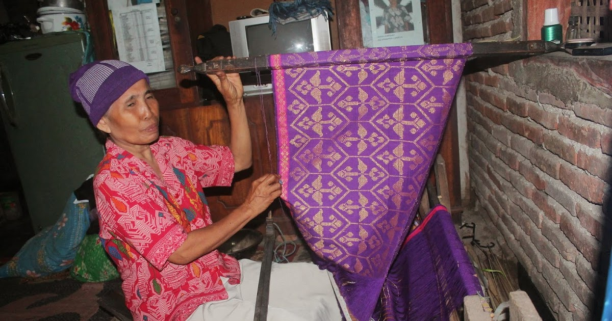
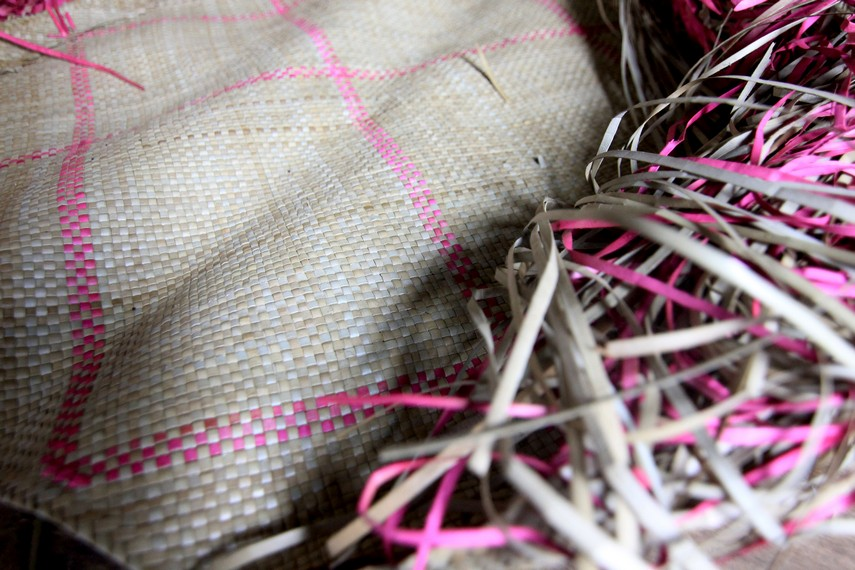

Kerajinan
1. Kre Alang

Salah satu kerajinan tangan yang masih tetap eksis hingga kini adalah Kre Alang. Kre Alang adalah hasil kerajinan tenunan khas Sumbawa berbahan dasar benang katun yang disongket benang Emas ataupun Perak.
Ke semuanya berbahan dasar benang, hanya saja dibuatkan motif dan model yang indah dengan menggunakan sesek. Dari segi teknik, pembuatannya dengan sistem gurin (lidi pembatas) . Lidi yang lebih besar pembatas dari bilahan bambu, pembatas dari penahan motif yang satu dengan motif yang lain. Hasil karya budaya Sumbawa yang di dalamnya terdapat ragam hias, menjadi pembeda dengan tenunan sejenis yang ada di daerah lain.
Proses pembuatannya memakan waktu yang lumayan lama. Untuk satu Kre Alang bisa memakan waktu dua puluh hari jika setiap hari dikerjakan. Terkadang bisa sampai 1 bulan bahkan lebih jika ada pekerjaan lain yang dikerjakan.
Kere Alang merupakan Identitas Tau Samawa (orang Sumbawa) yang digunakan dalam berbagai aktivitas budaya, terutama pada upacara adat daur hidup. Sehingga menenun Kere Alang menjadi seperangkat keterampilan yang wajib dikuasai perempuan Sumbawa pada masa lampau.
Bila tidak, maka posisi tawarnya sebagai perempuan terampil atau dalam istilah Sumbawa disebut “Tau Boto” dalam perannya mendampingi suami untuk menyejahterakan keluarga maupun dalam kehidupan sosial kemasyarakatan menjadi rendah.
Kapankah tradisi menenun Kere Alang dikenal oleh Tau Samawa ? Tidak ada catatan tertulis tentang hal tersebut.
Namun jika menganalisa pengaruh lingkungan budaya yang ikut membentuk tradisi Tau Samawa, kuat dugaan bila menenun songket mendapat pengaruh Tradisi dan Budaya Melayu.
2. Sarung Tenun Kre'sesek
 Sumbawa memiliki sarung tenun khas yang dibuat dengan tangan. Sarung tenun kre’sesek namanya. Sarung tenun yang dibuat dari berbagai jenis benang ini sering digunakan di kepala saat dilakukan upacara adat Sumbawa.
Sumbawa memiliki sarung tenun khas yang dibuat dengan tangan. Sarung tenun kre’sesek namanya. Sarung tenun yang dibuat dari berbagai jenis benang ini sering digunakan di kepala saat dilakukan upacara adat Sumbawa.
Sarung tenun kre’sesek merupakan hasil buatan tangan masyarakat di beberapa desa di Sumbawa, seperti Desa Moyo, Desa Lengas, dan Desa Poto. Biasanya, untuk membuat sehelai sarung tenun, diperlukan waktu setidaknya 1 bulan. Hal ini disebabkan, selain menjadi pembuat sarung tenun, masyarakat di sana juga bermata pencarian sebagai petani.
Aneka jenis binatang dan tanaman menjadi motif yang biasa digunakan pada sarung tenun masyarakat berjuluk negeri Samawa. Salah satu motif binatang yang sering digunakan adalah rusa.
Bahan utama untuk membuat sarung kre’sesek ini adalah benang biasa dan benang kembaya (benang khusus yang digunakan untuk motif). Alat-alat yang digunakan untuk membuat sarung tenun kre’sesek ini juga masih sangat tradisional seperti tolang guren, golang kecil, sisir, dan belida.
Sarung tenun kre’sesek telah dikenal sejak zaman Kerajaan Sumbawa. Saat itu, salah satu ruangan Istana Dalam Loka menjadi tempat khusus pembuatan sarung tenun ini.
Sarung tenun kre’sesek saat ini sudah menjadi salah satu ornamen pakaian adat Sumbawa. Banyak wisatawan yang sengaja berkunjung ke salah satu kabupaten di Nusa Tenggara Barat untuk mencari sarung tenun khas Sumbawa.
3. Tikar
 Kebiasaan kaum wanita Desa Tepal dalam mengisi waktu senggang membuahkan hasil kerajinan tikar yang sangat indah untuk dilihat. Anyaman terbuat dari daun pandan yang telah melalui proses penjemuran dirangkai menjadi satu sehingga menghasilkan sebuah tikar.Beranyam biasanya dilakukan kaum wanita di desa ini saat musim penghujan datang. Perkebunan dan persawahan yang telah dikelola saat musim semi membuat kegiatan menjadi lebih sedikit. Karenanya, kaum wanita mengisi waktu luang dengan beranyam.
Tikar yang telah jadi biasanya digunakan masyarakat untuk alas tidur atau menjadi penghias rumah mereka. Pada acara-acara tertentu, tikar yang mempunyai motif garis-garis ini digunakan sebagai alas duduk para tamu.